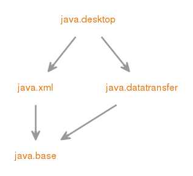

Module java.desktop
定义AWT和Swing用户界面工具包，以及可访问性，音频，映像，打印和JavaBeans的API。
- Module Graph:
- 
- 从以下版本开始：
- 9
{kind=link}
-
-
Packages
Exports 软件包 描述 java.applet 提供创建applet所需的类以及applet用于与其applet上下文进行通信的类。java.awt 包含用于创建用户界面和绘制图形和图像的所有类。java.awt.color 提供颜色空间的类。java.awt.desktop 提供与各种桌面功能交互的接口和类。java.awt.dnd 拖放是在许多图形用户界面系统中发现的直接操纵手势，它提供了一种在逻辑上与GUI中的表示元素相关联的实体之间传递信息的机制。java.awt.event 提供用于处理AWT组件触发的不同类型事件的接口和类。java.awt.font 提供与字体相关的类和界面。java.awt.geom 提供用于定义和执行与二维几何相关的对象的操作的Java 2D类。java.awt.im 提供输入法框架的类和接口。java.awt.im.spi 提供可以开发可以与任何Java运行时环境一起使用的输入法的接口。java.awt.image 提供创建和修改图像的类。java.awt.image.renderable 提供用于生成与渲染无关的图像的类和接口。java.awt.print 提供通用打印API的类和接口。java.beans 包含与开发 bean相关的类 - 基于JavaBeans架构的组件。java.beans.beancontext 提供与bean上下文相关的类和接口。javax.accessibility 定义用户界面组件与提供对这些组件的访问的辅助技术之间的合同。javax.imageio Java Image I / O API的主要包。javax.imageio.event 一组Java Image I / O API，用于在图像读取和写入期间同步通知事件。javax.imageio.metadata 处理读写元数据的Java Image I / O API的一个包。javax.imageio.plugins.bmp 包含内置BMP插件使用的公共类的软件包。javax.imageio.plugins.jpeg 支持内置JPEG插件的类。javax.imageio.plugins.tiff 内置TIFF插件使用的公共类。javax.imageio.spi 包含用于读取器，写入器，代码转换器和流以及运行时注册表的插件接口的Java Image I / O API包。javax.imageio.stream Java Image I / O API的一个封装，处理来自文件和流的低级I / O。javax.print 提供Java®打印服务API的主要类和接口。javax.print.attribute 提供描述Java“打印服务”属性类型以及如何将其集合到属性集中的类和接口。javax.print.attribute.standard 包javax.print.attribute.standard包含特定打印属性的类。javax.print.event 程序包javax.print.event包含事件类和侦听器接口。javax.sound.midi 提供MIDI（乐器数字接口）数据的I / O，排序和综合的接口和类。javax.sound.midi.spi 为服务提供商提供了提供新的MIDI设备，MIDI文件读取器和写入器或声卡读取器的接口。javax.sound.sampled 提供用于捕获，处理和播放采样音频数据的接口和类。javax.sound.sampled.spi 为服务提供商提供抽象类，以提供新的音频设备，声音文件读取器和写入器或音频格式转换器。javax.swing 提供一套“轻量级”（全Java语言）组件，尽可能地在所有平台上工作。javax.swing.border 提供用于绘制Swing组件周围特殊边框的类和接口。javax.swing.colorchooser 包含JColorChooser组件使用的类和接口。javax.swing.event 提供Swing组件触发的事件。javax.swing.filechooser 包含JFileChooser组件使用的类和接口。javax.swing.plaf 提供一个接口和许多抽象类，Swing用来提供其可插拔的外观和感觉功能。javax.swing.plaf.basic 提供根据“基本”外观构建的用户界面对象。javax.swing.plaf.metal 提供根据Java外观构建的用户界面对象（一旦代号为 Metal ），这是默认的外观和感觉。javax.swing.plaf.multi 提供组合两种或多种外观和感觉的用户界面对象。javax.swing.plaf.nimbus 提供根据跨平台Nimbus外观构建的用户界面对象。javax.swing.plaf.synth 合成是一种可以让所有绘画委托的外观和感觉。javax.swing.table 提供处理javax.swing.JTable类和接口。javax.swing.text 提供处理可编辑和不可编辑文本组件的类和接口。javax.swing.text.html 提供类HTMLEditorKit和支持类创建HTML文本编辑器。javax.swing.text.html.parser 提供默认的HTML解析器以及支持类。javax.swing.text.rtf 提供用于创建Rich-Text-Format文本编辑器的类（RTFEditorKit）。javax.swing.tree 提供处理javax.swing.JTree类和接口。javax.swing.undo 允许开发人员在文本编辑器等应用程序中提供撤消/重做的支持。
-
Modules
Requires Modifier Module 描述 transitive java.datatransfer 定义用于在应用程序之间和之间传输数据的API。transitive java.xml 定义用于XML处理的Java API（JAXP），Streaming API for XML（StAX），Simple API for XML（SAX）和W3C文档对象模型（DOM）API。
-
Services
Uses Type 描述 AccessibilityProvider 用于辅助技术的服务提供商接口（SPI）。AudioFileReader 音频文件阅读服务提供商。AudioFileWriter 音频文件写入服务提供商。FormatConversionProvider 格式转换提供者将一种或多种输入格式的格式转换服务提供给一种或多种输出格式。ImageInputStreamSpi ImageInputStream的服务提供商接口（SPI）。ImageOutputStreamSpi ImageOutputStream的服务提供商接口（SPI）。ImageReaderSpi 服务提供商接口（SPI），用于ImageReaders。ImageTranscoderSpi ImageTranscoder的服务提供商接口（SPI）。ImageWriterSpi ImageWriter的服务提供商接口（SPI）。InputMethodDescriptor 定义提供有关输入法的足够信息以启用该输入法的选择和加载的方法。MidiDeviceProvider AMidiDeviceProvider是特定类型的MIDI设备的工厂或提供商。MidiFileReader AMidiFileReader提供MIDI文件阅读服务。MidiFileWriter AMidiFileWriter提供MIDI文件写入服务。MixerProvider 特定搅拌机型号的供应商或工厂。PrintServiceLookup 该类的实现为特定类型的打印服务（通常相当于打印机）提供查找服务。SoundbankReader ASoundbankReader提供SoundbankReader文件阅读服务。StreamPrintServiceFactory AStreamPrintServiceFactory是StreamPrintService实例的工厂，可以以描述为MIME类型的特定文档格式打印到输出流。
-